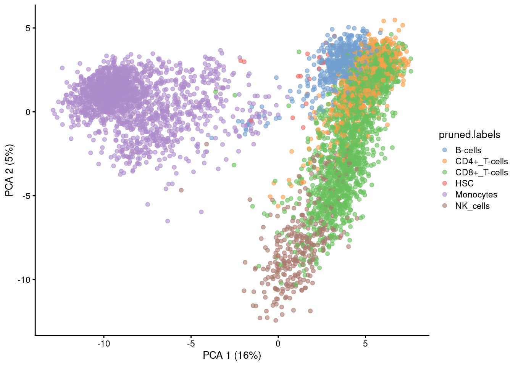
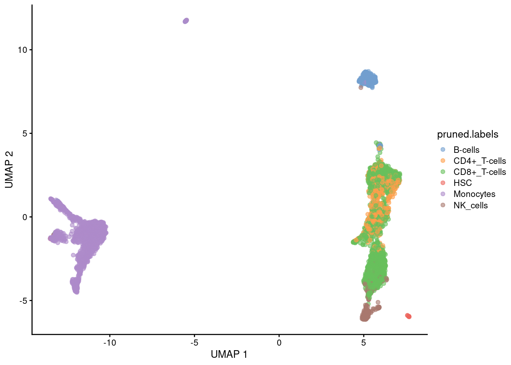
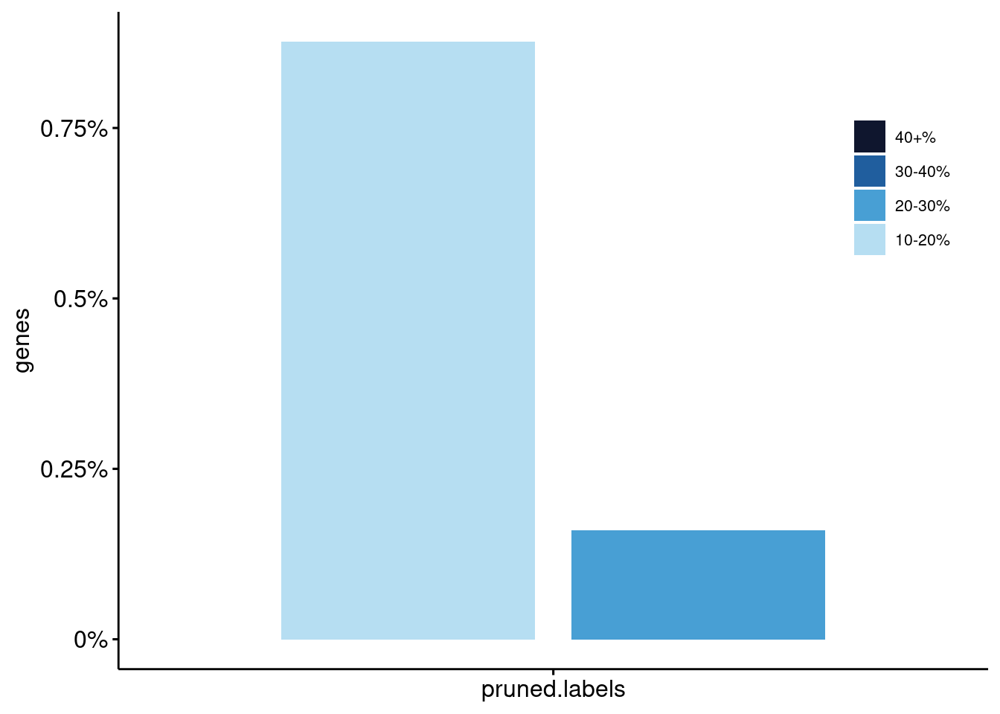
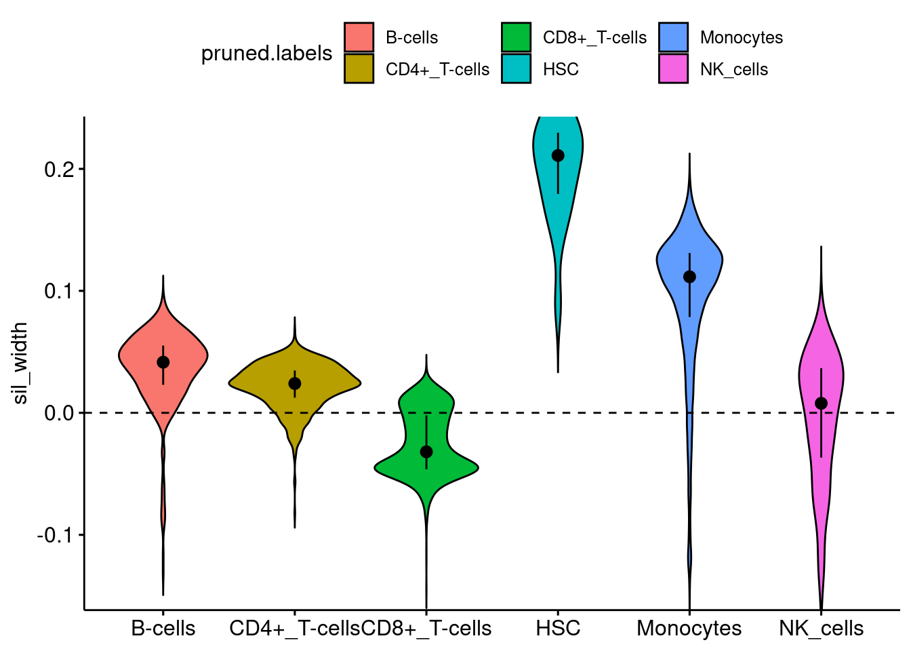
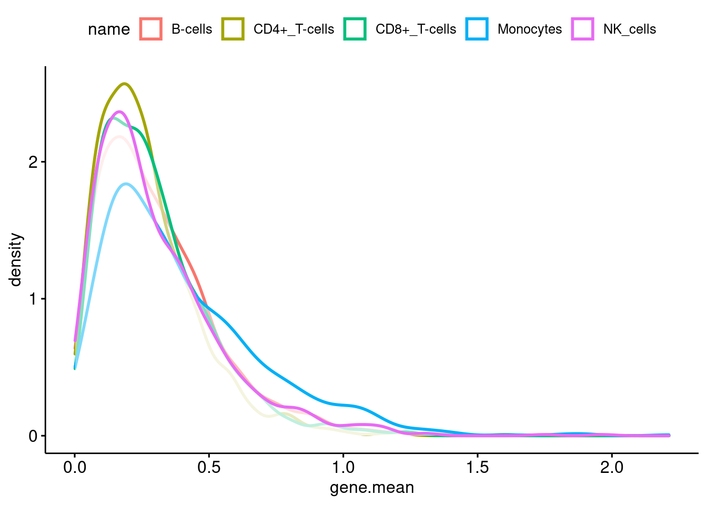
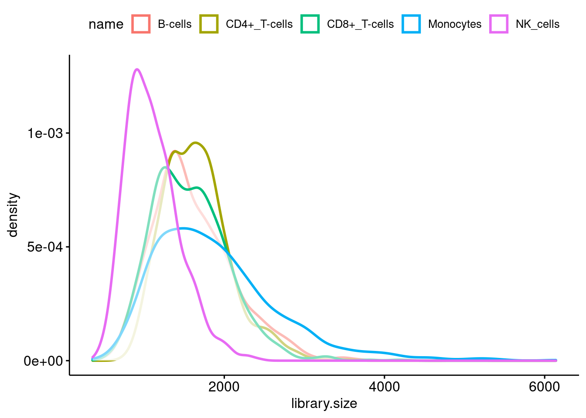
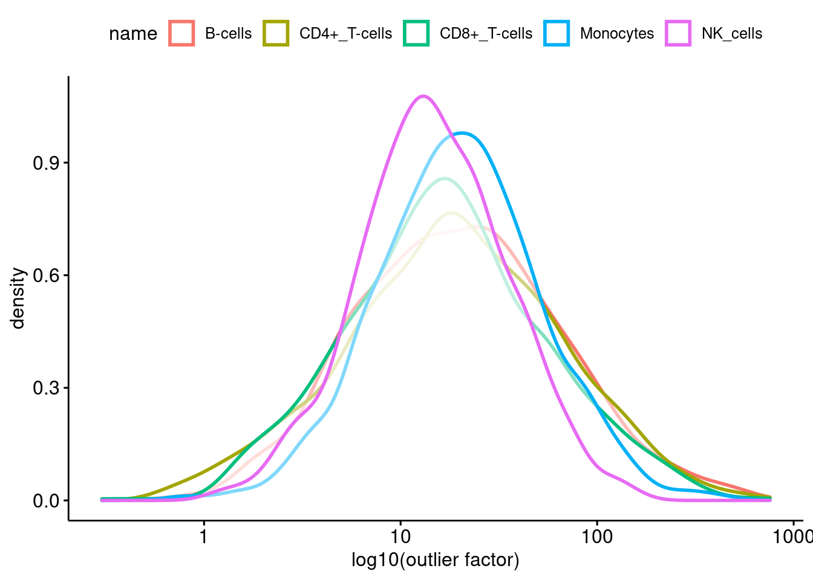

Last updated: 2021-07-30
Checks: 6 1
Knit directory: WEEO_2021_meta-eQTL/
This reproducible R Markdown analysis was created with workflowr (version 1.6.2). The Checks tab describes the reproducibility checks that were applied when the results were created. The Past versions tab lists the development history.
The R Markdown is untracked by Git. To know which version of the R Markdown file created these results, you’ll want to first commit it to the Git repo. If you’re still working on the analysis, you can ignore this warning. When you’re finished, you can run wflow_publish to commit the R Markdown file and build the HTML.
Great job! The global environment was empty. Objects defined in the global environment can affect the analysis in your R Markdown file in unknown ways. For reproduciblity it’s best to always run the code in an empty environment.
The command set.seed(20190102) was run prior to running the code in the R Markdown file. Setting a seed ensures that any results that rely on randomness, e.g. subsampling or permutations, are reproducible.
Great job! Recording the operating system, R version, and package versions is critical for reproducibility.
Nice! There were no cached chunks for this analysis, so you can be confident that you successfully produced the results during this run.
Great job! Using relative paths to the files within your workflowr project makes it easier to run your code on other machines.
Great! You are using Git for version control. Tracking code development and connecting the code version to the results is critical for reproducibility.
The results in this page were generated with repository version ce60745. See the Past versions tab to see a history of the changes made to the R Markdown and HTML files.
Note that you need to be careful to ensure that all relevant files for the analysis have been committed to Git prior to generating the results (you can use wflow_publish or wflow_git_commit). workflowr only checks the R Markdown file, but you know if there are other scripts or data files that it depends on. Below is the status of the Git repository when the results were generated:
Ignored files:
Ignored: .Rhistory
Ignored: .Rproj.user/
Untracked files:
Untracked: .gitignore
Untracked: WEEO_2021_meta-eQTL.Rproj
Untracked: analysis/2021-07-30_pbmc8k-reference-processing.Rmd
Untracked: analysis/figure/
Untracked: code/sce_plots.R
Untracked: code/sim_celltypes.R
Untracked: code/sim_celltypes.Rmd
Untracked: output/00_Figures/
Untracked: output/01_simulations/
Untracked: references/chr2.filtered.log
Untracked: references/chr2.filtered.vcf
Untracked: references/chr2.filtered2.log
Untracked: references/chr2.filtered2.vcf
Untracked: references/chr2.filtered3.log
Untracked: references/chr2.filtered3.vcf
Untracked: references/chr2.genes.gff3
Untracked: references/chr2.vcf.gz
Unstaged changes:
Modified: CITATION
Modified: Dockerfile
Modified: LICENSE
Modified: README.md
Modified: _workflowr.yml
Modified: analysis/_site.yml
Modified: analysis/about.Rmd
Modified: analysis/index.Rmd
Modified: analysis/license.Rmd
Modified: cluster.json
Modified: code/README.md
Modified: data/README.md
Modified: environment.yml
Modified: envs/myenv.yaml
Modified: org/README.md
Modified: org/project_management.org
Modified: output/README.md
Modified: references/README.md
Modified: resources/README.md
Note that any generated files, e.g. HTML, png, CSS, etc., are not included in this status report because it is ok for generated content to have uncommitted changes.
There are no past versions. Publish this analysis with wflow_publish() to start tracking its development.
suppressPackageStartupMessages({
library(TENxPBMCData)
library(splatter)
library(VariantAnnotation)
library(org.Hs.eg.db)
library(tidyverse)
library(scater)
library(celldex)
library(SingleR)
library(RColorBrewer)
library(ggpubr)
library(cluster)
})
source("code/sce_plots.R")
save.fig <- TRUE
save.params <- TRUE
save.params.path <- "output/01_simulations/01_reference-params/pbmc8k/"
dataset <- "pbmc8k"
n.genes <- 1255
min.cells.for.estimation <- 100snapshotDate(): 2020-10-27see ?celldex and browseVignettes('celldex') for documentationloading from cachesee ?celldex and browseVignettes('celldex') for documentationloading from cachesnapshotDate(): 2020-10-27see ?TENxPBMCData and browseVignettes('TENxPBMCData') for documentationloading from cache'select()' returned 1:many mapping between keys and columns[1] 23251 8349
B-cells CD4+_T-cells CD8+_T-cells Erythrocytes HSC Monocytes
1198 1486 2905 1 19 2327
NK_cells
413 We will be simulating n=1255 genes (n genes on chromosome 2)
rowData(pbmc)$percentZeros <- rowSums(counts(pbmc) == 0) / ncol(pbmc)
pbmc$percentZeros <- colSums(counts(pbmc) == 0) / nrow(pbmc)
pbmc.subset <- pbmc[rowData(pbmc)$percentZeros <= 0.9,
colData(pbmc)$percentZeros <= 0.95]
dim(pbmc.subset)[1] 3937 5476table(pbmc.subset$pruned.labels)
B-cells CD4+_T-cells CD8+_T-cells Erythrocytes HSC Monocytes
485 805 2026 0 19 1804
NK_cells
337 set.seed(49)
pbmc.subset <- pbmc.subset[sample(1:nrow(pbmc.subset), n.genes), ]
dim(pbmc.subset)[1] 1255 5476# Plot reference data
pbmc.subset <- runPCA(pbmc.subset)
plotPCA(pbmc.subset, colour_by="pruned.labels")
if(save.fig){ggsave("output/00_Figures/reference_pbmc8/PCA.pdf",
height = 5, width = 5)}pbmc.subset <- runUMAP(pbmc.subset)
plotUMAP(pbmc.subset, colour_by="pruned.labels")
if(save.fig){ggsave("output/00_Figures/reference_pbmc8/UMAP.pdf",
height = 5, width = 5)}plotVarExp(pbmc.subset, variables = c("pruned.labels"))
if(save.fig){ggsave("output/00_Figures/reference_pbmc8/varExplained.pdf",
height = 5, width = 5)}plotSilhouette(pbmc.subset, group_by = "pruned.labels")
if(save.fig){ggsave("output/00_Figures/reference_pbmc8/silhouette.pdf",
height = 5, width = 5)}Will estimate parameters for each of the five cell types that have at least 100 cells (B-cells, CD4+, CD8+, monocytes, and NK cells). The following plots compare the estimated parameters across the celltypes.
celltypes <- unique(pbmc.subset$pruned.labels)
params <- newSplatPopParams(pop.cv.bins = 50)
params.of.interest <- c("mean.rate", "mean.shape", "lib.loc", "lib.scale",
"out.prob", "out.facLoc", "out.facScale",
"bcv.common", "bcv.df")
summarize.params <- list()
i <- 0
for(ct in celltypes){
ct.subset <- pbmc.subset[, pbmc.subset$pruned.labels == ct]
if(ncol(ct.subset) >= min.cells.for.estimation){
i <- i+1
ct.params <- splatPopEstimate(params = params,
counts = as.matrix(counts(ct.subset)))
if(save.params) {
saveRDS(ct.params, file = paste0(save.params.path,
"splatPopParams_", ct, ".rds"))}
message(ct)
ct.summary <- getParams(ct.params, params.of.interest)
summarize.params[[i]] <- c(as.character(ct), unname(unlist(ct.summary)))
}
}
summarize.params.df <- as.data.frame(t(as.data.frame(summarize.params)))
colnames(summarize.params.df) <- c("celltype", params.of.interest)
rownames(summarize.params.df) <- summarize.params.df$celltypesummarize.params.df celltype mean.rate mean.shape lib.loc
CD4+_T-cells CD4+_T-cells 6.97542828283853 2.00209170449681 7.37777769725614
Monocytes Monocytes 4.00442037975632 1.60333087423193 7.49869469839397
CD8+_T-cells CD8+_T-cells 6.64768130738316 2.01608981586537 7.31137908077668
B-cells B-cells 6.43718314954489 1.94466169373321 7.3232180854594
NK_cells NK_cells 5.8384361596826 1.79024813966821 6.95901112790671
lib.scale out.prob out.facLoc
CD4+_T-cells 0.248648672019637 0.10199203187251 2.97151231384555
Monocytes 0.400398640089129 0.0972111553784861 3.05762204744502
CD8+_T-cells 0.296813327810108 0.107569721115538 2.85170458268948
B-cells 0.316650859662665 0.0908366533864542 3.0102131212442
NK_cells 0.287752744282604 0.100398406374502 2.69535600248487
out.facScale bcv.common bcv.df
CD4+_T-cells 1.2164729114145 0.113411919716854 121.958731431982
Monocytes 0.983213456856566 0.138019057958656 72.1037693443778
CD8+_T-cells 1.16657860393538 0.125022673988992 94.1760665014571
B-cells 1.20923606350777 0.116264699146439 163.83309981887
NK_cells 0.880798736317075 0.130708828989223 158.064328125632n.sim <- 1000
sim.means <- apply(summarize.params.df, 1,
function(x) rgamma(n.sim,
as.numeric(x["mean.shape"]),
as.numeric(x[ "mean.rate"])))
as.data.frame(sim.means) %>% pivot_longer(cols = everything()) %>%
ggdensity(x = "value", color = "name", size=1, xlab="gene.mean")
n.sim <- 1000
sim.library <- apply(summarize.params.df, 1,
function(x) rlnorm(n.sim,
meanlog = as.numeric(x["lib.loc"]),
sdlog = as.numeric(x[ "lib.scale"])))
as.data.frame(sim.library) %>% pivot_longer(cols = everything()) %>%
ggdensity(x = "value", fill=NULL, color = "name", size=1, xlab="library.size")
message("Outlier probabilities:")Outlier probabilities:summarize.params.df$out.prob <- round(as.numeric(summarize.params.df$out.prob), 4)
summarize.params.df[, c("celltype", "out.prob")] celltype out.prob
CD4+_T-cells CD4+_T-cells 0.1020
Monocytes Monocytes 0.0972
CD8+_T-cells CD8+_T-cells 0.1076
B-cells B-cells 0.0908
NK_cells NK_cells 0.1004sim.outlier <- apply(summarize.params.df, 1,
function(x) rlnorm(n.sim,
meanlog = as.numeric(x["out.facLoc"]),
sdlog = as.numeric(x[ "out.facScale"])))
as.data.frame(sim.outlier) %>% pivot_longer(cols = everything()) %>%
ggdensity(x = "value", fill=NULL, color = "name", size=1,
xlab="log10(outlier factor)") + xscale("log10")
summarize.params.df$bcv.common <- round(as.numeric(summarize.params.df$bcv.common), 3)
summarize.params.df$bcv.df <- round(as.numeric(summarize.params.df$bcv.df), 2)
summarize.params.df[, c("bcv.common", "bcv.df")] bcv.common bcv.df
CD4+_T-cells 0.113 121.96
Monocytes 0.138 72.10
CD8+_T-cells 0.125 94.18
B-cells 0.116 163.83
NK_cells 0.131 158.06
devtools::session_info()─ Session info ───────────────────────────────────────────────────────────────
setting value
version R version 4.0.4 (2021-02-15)
os Red Hat Enterprise Linux
system x86_64, linux-gnu
ui X11
language (EN)
collate en_AU.UTF-8
ctype en_AU.UTF-8
tz Australia/Melbourne
date 2021-07-30
─ Packages ───────────────────────────────────────────────────────────────────
package * version date lib source
abind 1.4-5 2016-07-21 [1] CRAN (R 4.0.2)
AnnotationDbi * 1.52.0 2020-10-27 [1] Bioconductor
AnnotationHub 2.22.1 2021-04-16 [1] Bioconductor
askpass 1.1 2019-01-13 [1] CRAN (R 4.0.2)
assertthat 0.2.1 2019-03-21 [1] CRAN (R 4.0.2)
backports 1.2.1 2020-12-09 [1] CRAN (R 4.0.4)
beachmat 2.6.4 2020-12-20 [1] Bioconductor
beeswarm 0.4.0 2021-06-01 [1] CRAN (R 4.0.4)
Biobase * 2.50.0 2020-10-27 [1] Bioconductor
BiocFileCache 1.14.0 2020-10-27 [1] Bioconductor
BiocGenerics * 0.36.1 2021-04-16 [1] Bioconductor
BiocManager 1.30.16 2021-06-15 [1] CRAN (R 4.0.4)
BiocNeighbors 1.8.2 2020-12-07 [1] Bioconductor
BiocParallel 1.24.1 2020-11-06 [1] Bioconductor
BiocSingular 1.6.0 2020-10-27 [1] Bioconductor
BiocVersion 3.12.0 2020-04-27 [1] Bioconductor
biomaRt 2.46.3 2021-02-09 [1] Bioconductor
Biostrings * 2.58.0 2020-10-27 [1] Bioconductor
bit 4.0.4 2020-08-04 [1] CRAN (R 4.0.2)
bit64 4.0.5 2020-08-30 [1] CRAN (R 4.0.2)
bitops 1.0-7 2021-04-24 [1] CRAN (R 4.0.4)
blob 1.2.1 2020-01-20 [1] CRAN (R 4.0.2)
broom 0.7.8 2021-06-24 [1] CRAN (R 4.0.4)
BSgenome 1.58.0 2020-10-27 [1] Bioconductor
bslib 0.2.5.1 2021-05-18 [1] CRAN (R 4.0.4)
cachem 1.0.5 2021-05-15 [1] CRAN (R 4.0.4)
callr 3.7.0 2021-04-20 [1] CRAN (R 4.0.4)
car 3.0-11 2021-06-27 [1] CRAN (R 4.0.4)
carData 3.0-4 2020-05-22 [1] CRAN (R 4.0.2)
celldex * 1.0.0 2020-10-29 [1] Bioconductor
cellranger 1.1.0 2016-07-27 [1] CRAN (R 4.0.2)
checkmate 2.0.0 2020-02-06 [1] CRAN (R 4.0.2)
cli 3.0.0 2021-06-30 [1] CRAN (R 4.0.4)
cluster * 2.1.0 2019-06-19 [2] CRAN (R 4.0.4)
codetools 0.2-18 2020-11-04 [1] CRAN (R 4.0.2)
colorspace 2.0-2 2021-06-24 [1] CRAN (R 4.0.4)
cowplot 1.1.1 2020-12-30 [1] CRAN (R 4.0.4)
crayon 1.4.1 2021-02-08 [1] CRAN (R 4.0.4)
curl 4.3.2 2021-06-23 [1] CRAN (R 4.0.4)
data.table 1.14.0 2021-02-21 [1] CRAN (R 4.0.4)
DBI 1.1.1 2021-01-15 [1] CRAN (R 4.0.4)
dbplyr 2.1.1 2021-04-06 [1] CRAN (R 4.0.4)
DelayedArray * 0.16.3 2021-03-24 [1] Bioconductor
DelayedMatrixStats 1.12.3 2021-02-03 [1] Bioconductor
desc 1.3.0 2021-03-05 [1] CRAN (R 4.0.4)
devtools 2.4.2 2021-06-07 [1] CRAN (R 4.0.4)
digest 0.6.27 2020-10-24 [1] CRAN (R 4.0.2)
dplyr * 1.0.7 2021-06-18 [1] CRAN (R 4.0.4)
edgeR 3.32.1 2021-01-14 [1] Bioconductor
ellipsis 0.3.2 2021-04-29 [1] CRAN (R 4.0.4)
evaluate 0.14 2019-05-28 [1] CRAN (R 4.0.2)
ExperimentHub 1.16.1 2021-04-16 [1] Bioconductor
fansi 0.5.0 2021-05-25 [1] CRAN (R 4.0.4)
farver 2.1.0 2021-02-28 [1] CRAN (R 4.0.4)
fastmap 1.1.0 2021-01-25 [1] CRAN (R 4.0.3)
fitdistrplus 1.1-5 2021-05-28 [1] CRAN (R 4.0.4)
forcats * 0.5.1 2021-01-27 [1] CRAN (R 4.0.4)
foreign 0.8-81 2020-12-22 [2] CRAN (R 4.0.4)
fs 1.5.0 2020-07-31 [1] CRAN (R 4.0.2)
generics 0.1.0 2020-10-31 [1] CRAN (R 4.0.2)
GenomeInfoDb * 1.26.7 2021-04-08 [1] Bioconductor
GenomeInfoDbData 1.2.4 2020-11-10 [1] Bioconductor
GenomicAlignments 1.26.0 2020-10-27 [1] Bioconductor
GenomicFeatures 1.42.3 2021-04-01 [1] Bioconductor
GenomicRanges * 1.42.0 2020-10-27 [1] Bioconductor
ggbeeswarm 0.6.0 2017-08-07 [1] CRAN (R 4.0.2)
ggplot2 * 3.3.5 2021-06-25 [1] CRAN (R 4.0.4)
ggpubr * 0.4.0 2020-06-27 [1] CRAN (R 4.0.3)
ggsignif 0.6.2 2021-06-14 [1] CRAN (R 4.0.4)
git2r 0.28.0 2021-01-10 [1] CRAN (R 4.0.4)
glue 1.4.2 2020-08-27 [1] CRAN (R 4.0.2)
gridExtra 2.3 2017-09-09 [1] CRAN (R 4.0.2)
gtable 0.3.0 2019-03-25 [1] CRAN (R 4.0.2)
haven 2.4.1 2021-04-23 [1] CRAN (R 4.0.4)
HDF5Array * 1.18.1 2021-02-04 [1] Bioconductor
highr 0.9 2021-04-16 [1] CRAN (R 4.0.4)
hms 1.1.0 2021-05-17 [1] CRAN (R 4.0.4)
htmltools 0.5.1.1 2021-01-22 [1] CRAN (R 4.0.3)
httpuv 1.6.1 2021-05-07 [1] CRAN (R 4.0.4)
httr 1.4.2 2020-07-20 [1] CRAN (R 4.0.2)
interactiveDisplayBase 1.28.0 2020-10-27 [1] Bioconductor
IRanges * 2.24.1 2020-12-12 [1] Bioconductor
irlba 2.3.3 2019-02-05 [1] CRAN (R 4.0.2)
jquerylib 0.1.4 2021-04-26 [1] CRAN (R 4.0.4)
jsonlite 1.7.2 2020-12-09 [1] CRAN (R 4.0.4)
knitr 1.33 2021-04-24 [1] CRAN (R 4.0.4)
labeling 0.4.2 2020-10-20 [1] CRAN (R 4.0.2)
later 1.2.0 2021-04-23 [1] CRAN (R 4.0.4)
lattice 0.20-41 2020-04-02 [2] CRAN (R 4.0.4)
lifecycle 1.0.0 2021-02-15 [1] CRAN (R 4.0.4)
limma 3.46.0 2020-10-27 [1] Bioconductor
locfit 1.5-9.4 2020-03-25 [1] CRAN (R 4.0.2)
lubridate 1.7.10 2021-02-26 [1] CRAN (R 4.0.4)
magrittr 2.0.1 2020-11-17 [1] CRAN (R 4.0.3)
MASS 7.3-54 2021-05-03 [1] CRAN (R 4.0.4)
Matrix * 1.3-4 2021-06-01 [1] CRAN (R 4.0.4)
MatrixGenerics * 1.2.1 2021-01-30 [1] Bioconductor
matrixStats * 0.59.0 2021-06-01 [1] CRAN (R 4.0.4)
memoise 2.0.0 2021-01-26 [1] CRAN (R 4.0.4)
mime 0.11 2021-06-23 [1] CRAN (R 4.0.4)
modelr 0.1.8 2020-05-19 [1] CRAN (R 4.0.2)
munsell 0.5.0 2018-06-12 [1] CRAN (R 4.0.2)
openssl 1.4.4 2021-04-30 [1] CRAN (R 4.0.4)
openxlsx 4.2.4 2021-06-16 [1] CRAN (R 4.0.4)
org.Hs.eg.db * 3.12.0 2021-04-28 [1] Bioconductor
pillar 1.6.1 2021-05-16 [1] CRAN (R 4.0.4)
pkgbuild 1.2.0 2020-12-15 [1] CRAN (R 4.0.4)
pkgconfig 2.0.3 2019-09-22 [1] CRAN (R 4.0.2)
pkgload 1.2.1 2021-04-06 [1] CRAN (R 4.0.4)
prettyunits 1.1.1 2020-01-24 [1] CRAN (R 4.0.2)
processx 3.5.2 2021-04-30 [1] CRAN (R 4.0.4)
progress 1.2.2 2019-05-16 [1] CRAN (R 4.0.2)
promises 1.2.0.1 2021-02-11 [1] CRAN (R 4.0.4)
ps 1.6.0 2021-02-28 [1] CRAN (R 4.0.4)
purrr * 0.3.4 2020-04-17 [1] CRAN (R 4.0.2)
R6 2.5.0 2020-10-28 [1] CRAN (R 4.0.2)
rappdirs 0.3.3 2021-01-31 [1] CRAN (R 4.0.4)
RColorBrewer * 1.1-2 2014-12-07 [1] CRAN (R 4.0.2)
Rcpp 1.0.7 2021-07-07 [1] CRAN (R 4.0.4)
RcppAnnoy 0.0.18 2020-12-15 [1] CRAN (R 4.0.4)
RCurl 1.98-1.3 2021-03-16 [1] CRAN (R 4.0.4)
readr * 1.4.0 2020-10-05 [1] CRAN (R 4.0.2)
readxl 1.3.1 2019-03-13 [1] CRAN (R 4.0.2)
remotes 2.4.0 2021-06-02 [1] CRAN (R 4.0.4)
reprex 2.0.0 2021-04-02 [1] CRAN (R 4.0.4)
rhdf5 * 2.34.0 2020-10-27 [1] Bioconductor
rhdf5filters 1.2.1 2021-05-03 [1] Bioconductor
Rhdf5lib 1.12.1 2021-01-26 [1] Bioconductor
rio 0.5.27 2021-06-21 [1] CRAN (R 4.0.4)
rlang 0.4.11 2021-04-30 [1] CRAN (R 4.0.4)
rmarkdown 2.9 2021-06-15 [1] CRAN (R 4.0.4)
rprojroot 2.0.2 2020-11-15 [1] CRAN (R 4.0.3)
Rsamtools * 2.6.0 2020-10-27 [1] Bioconductor
RSpectra 0.16-0 2019-12-01 [1] CRAN (R 4.0.3)
RSQLite 2.2.7 2021-04-22 [1] CRAN (R 4.0.4)
rstatix 0.7.0 2021-02-13 [1] CRAN (R 4.0.4)
rstudioapi 0.13 2020-11-12 [1] CRAN (R 4.0.3)
rsvd 1.0.5 2021-04-16 [1] CRAN (R 4.0.4)
rtracklayer 1.50.0 2020-10-27 [1] Bioconductor
rvest 1.0.0 2021-03-09 [1] CRAN (R 4.0.4)
S4Vectors * 0.28.1 2020-12-09 [1] Bioconductor
sass 0.4.0 2021-05-12 [1] CRAN (R 4.0.4)
scales 1.1.1 2020-05-11 [1] CRAN (R 4.0.2)
scater * 1.18.6 2021-02-26 [1] Bioconductor
scuttle 1.0.4 2020-12-17 [1] Bioconductor
sessioninfo 1.1.1 2018-11-05 [1] CRAN (R 4.0.2)
shiny 1.6.0 2021-01-25 [1] CRAN (R 4.0.4)
SingleCellExperiment * 1.12.0 2020-10-27 [1] Bioconductor
SingleR * 1.4.1 2021-02-02 [1] Bioconductor
sparseMatrixStats 1.2.1 2021-02-02 [1] Bioconductor
splatter * 1.15.2 2021-04-15 [1] Bioconductor
stringi 1.7.2 2021-07-14 [1] CRAN (R 4.0.4)
stringr * 1.4.0 2019-02-10 [1] CRAN (R 4.0.2)
SummarizedExperiment * 1.20.0 2020-10-27 [1] Bioconductor
survival 3.2-11 2021-04-26 [1] CRAN (R 4.0.4)
TENxPBMCData * 1.8.0 2020-10-29 [1] Bioconductor
testthat 3.0.4 2021-07-01 [1] CRAN (R 4.0.4)
tibble * 3.1.2 2021-05-16 [1] CRAN (R 4.0.4)
tidyr * 1.1.3 2021-03-03 [1] CRAN (R 4.0.4)
tidyselect 1.1.1 2021-04-30 [1] CRAN (R 4.0.4)
tidyverse * 1.3.1 2021-04-15 [1] CRAN (R 4.0.4)
usethis 2.0.1 2021-02-10 [1] CRAN (R 4.0.4)
utf8 1.2.1 2021-03-12 [1] CRAN (R 4.0.4)
uwot 0.1.10 2020-12-15 [1] CRAN (R 4.0.4)
VariantAnnotation * 1.36.0 2020-10-27 [1] Bioconductor
vctrs 0.3.8 2021-04-29 [1] CRAN (R 4.0.4)
vipor 0.4.5 2017-03-22 [1] CRAN (R 4.0.2)
viridis 0.6.1 2021-05-11 [1] CRAN (R 4.0.4)
viridisLite 0.4.0 2021-04-13 [1] CRAN (R 4.0.4)
withr 2.4.2 2021-04-18 [1] CRAN (R 4.0.4)
workflowr 1.6.2 2020-04-30 [1] CRAN (R 4.0.2)
xfun 0.24 2021-06-15 [1] CRAN (R 4.0.4)
XML 3.99-0.6 2021-03-16 [1] CRAN (R 4.0.4)
xml2 1.3.2 2020-04-23 [1] CRAN (R 4.0.2)
xtable 1.8-4 2019-04-21 [1] CRAN (R 4.0.3)
XVector * 0.30.0 2020-10-27 [1] Bioconductor
yaml 2.2.1 2020-02-01 [1] CRAN (R 4.0.2)
zip 2.2.0 2021-05-31 [1] CRAN (R 4.0.4)
zlibbioc 1.36.0 2020-10-27 [1] Bioconductor
[1] /mnt/mcfiles/cazodi/R/x86_64-pc-linux-gnu-library/4.0
[2] /opt/R/4.0.4/lib/R/library